とにかく人と自分が違うのがすごく嫌な子でした
ののここママさんは、小さい頃はどんなお子さんでしたか？
ののここママ 私はあまり自信がないタイプで、人としゃべることもあまりなくて、見た目も地味なほうでしたが、高校生からはじけました（笑）今はおしゃべり大好きなんですよ。 小学生のときはとにかく人と自分が違うのがすごく嫌な子で、ランドセルも、みんなが赤がいいって言ったら赤がいいって。周りのみんなが赤いランドセルの中、ひとりピンクがいると、恥ずかしくないのかな、とか思う。 運動は苦手で、勉強はだいたいしたくない。お友だちと遊ぶのは好きだけど、ドッヂボールはしたくない、お人形で遊びたい、みたいな。 外面はよくて、「いい子ね〜」とは言われてました。
ご家庭ではどんなお子さんでしたか？
ののここママ 家の中で、母は厳しくて、おじいちゃんおばあちゃんともいっしょに住んでたんですけど、おじいちゃんも怒ると怖いし、父はあまり関わっていなくて。おばあちゃんが激甘だったので、おばあちゃんにわがままを言ってましたね。 だから母には1回もわがままを小5くらいまでは言ってない。言ったら怒られるって思ってたので。今は全然、仲良しですけど。
ずっとこのあたり（福岡県）にお住まいなんですか？
ののここママ そうですね。北九州以外は。ずっと25歳まで春日市（福岡県中西部の市）に嫁に行くまでいたので。
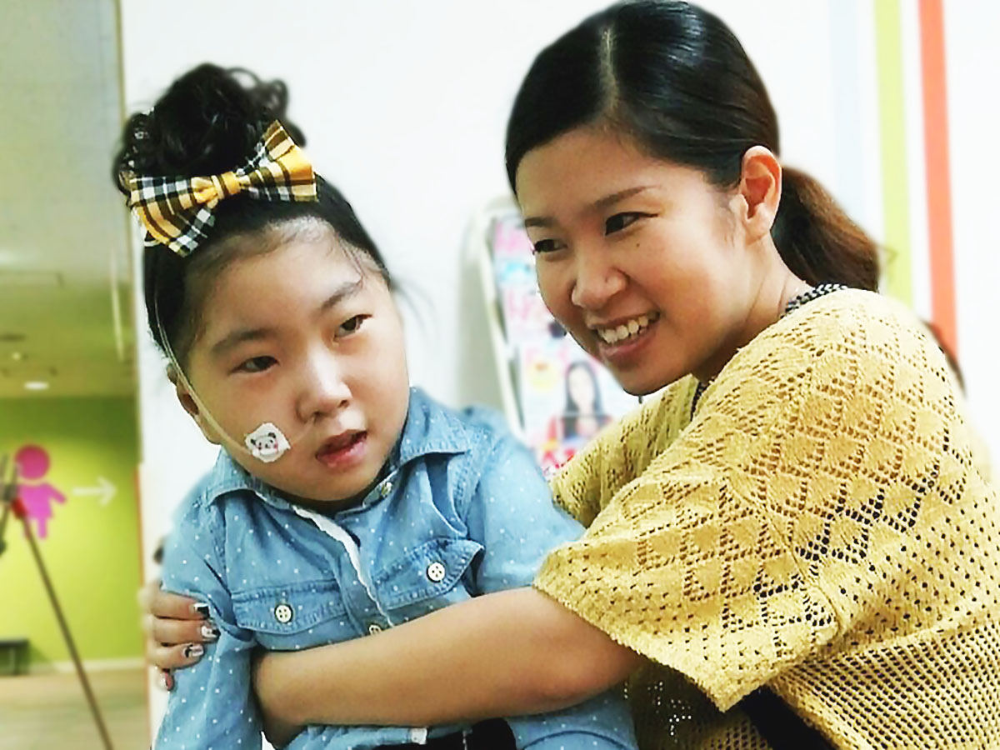
出会いはお義母さんがきっかけ。全部、あいだにお義母さんがいるんですよ
パートナーさんと出会ったのはいつごろですか？
ののここママ 出会ったのは、私が17歳のときで、旦那は15歳のときです。 私、モスバーガーでアルバイトをしてたんですよ。パートの方が今の義理のお母さん（以下Aさん）になる方で、息子がいるのを知らない状態で、いっしょに働いてたんです。
中学校を卒業して高校入学するまでって、ちょっと休みというか、空きますよね。そのときに、「アルバイトしたい」と言ったらしくて、特別にオーナーにお願いして入ってきたのが、旦那でした。そこがはじめての出会いでした。
旦那は当時、背も小さくて、そのときは、パートのAさんの息子って感じで、恋愛感情はお互いになかったです。
旦那が19歳になったときに再会するんですけど、そこから恋愛関係になって、全部あいだにAさんがいるんですよ。
私はバイトをやめて、そのあとにAさんも辞めて。 お互い家は近くて、実家の近くのスーパーの中のクリーニング屋さんの受付にAさんがいて。買い物してるときに、偶然見つけて「Aさーん」って声かけました。
それで「息子が番号交換したいって言ってるよ」って言われたか……、私から「息子さん元気ですか」って声かけたか……、どっちかから声をかけて、そこからはAさん抜きで。
だから、「出会いは何？」って言われると、どこから話そうかな？と。とにかく、お義母さんがきっかけなんです。
離婚しようかなと何度も考えた
そこからご結婚されて。
ののここママ そうなんです。
結婚されるまでは、お仕事は何をされてたんですか？
ののここママ 補正下着の販売員をしてました。あまり大きな声では……下着の販売員ですね。で、結婚を機に仕事はやめて、長女がお腹にいるときまでは北九州でパートをしてたくらいです。
パートナーさんとは仲はいいですか？
ののここママ 結婚して11年経つんですけど、最初のうちはすごくけんかも多くて、離婚しようかなと何度も考えたくらいだし、まぁでも私が慣れちゃったのかな……。
スタートが最悪で、よく結婚したねって言われるくらいひどい人だったので。結婚してから、私もえーって思いました。結婚するまでも、ちらほら見え隠れしてたんですけど、そんなにひどい人とは思わなくて。
今はなるべく私も、大人になって「ありがとう」を言うようにしたり、向こうも少しずつ、ウニのトゲがタワシのトゲくらいになってきて、年々仲良くなってる感じですかね。
お姉ちゃんが生まれたのは、結婚して何年目くらいですか？
ののここママ 結婚して1年後ですね。結婚してちょっとして妊娠したので。で、その後、1年5ヶ月後に心希（ここね）が。
家族構成はののここママさん、パートナーさん、希風（ののか）ちゃん、心希ちゃんですか？
ののここママ そうです。
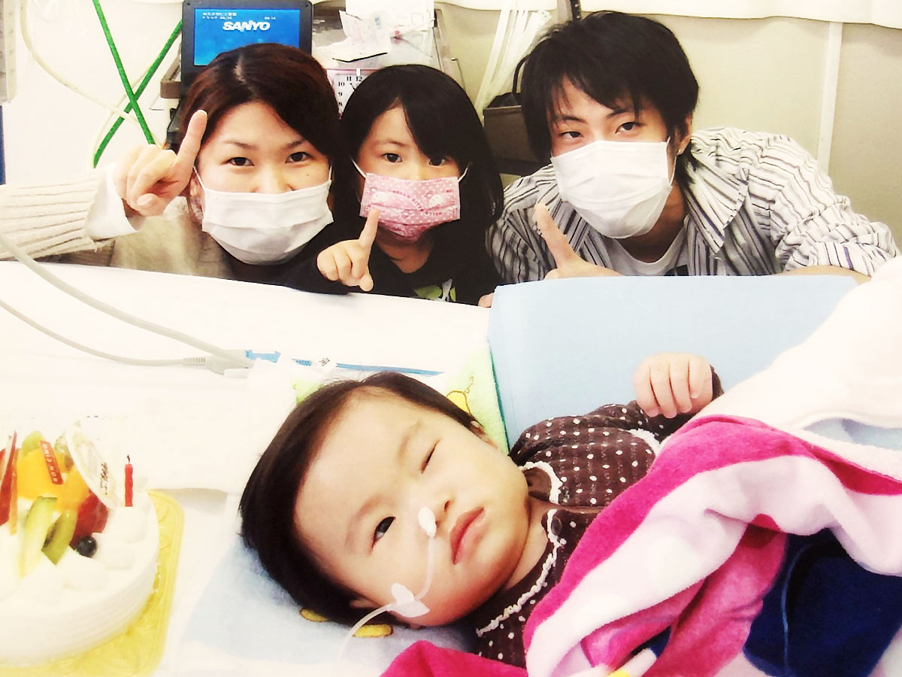
生まれたときは、なんともなかった
心希ちゃんの障害はどんなことがきっかけだったんですか？
ののここママ 生まれたときは、なんともなかったです。 11ヶ月のときに、熱が出たんですよね。 熱が結局、突発性発疹だったんですけど、熱性痙攣でしょうね。最初に起こしたのが1時間経っても止まらなくて。
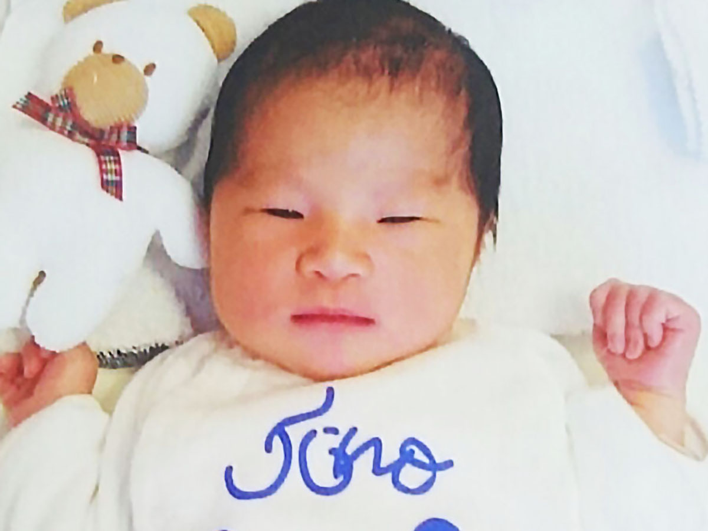
そのあいだに、救急車呼んで病院には行ってるんですけど、病院でもなかなか何十分も止まらず、1時間経ったころにやっと治って、そこから検査に回されて、入院が決まったときに7〜8回強い発作を起こしたんですけど、私は見てなくて。
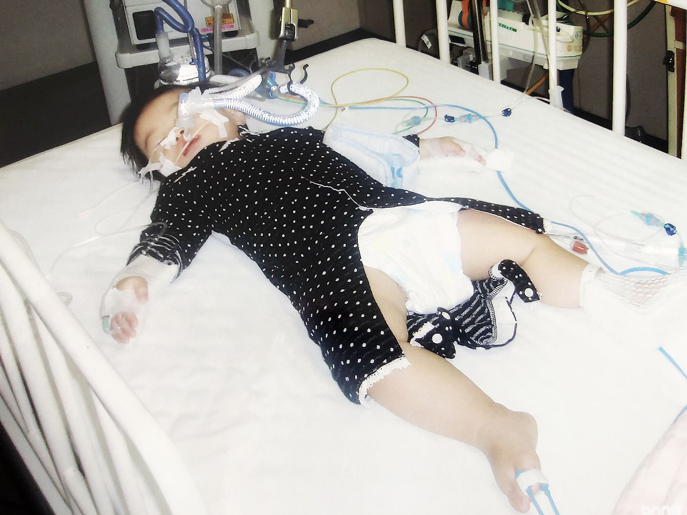
母にみてもらって、入院の準備で戻ってたときだったんですよ。そのあいだに発作を起こして、私が病院に戻ったころは痙攣はなく、ただ、一晩呼吸状態がおかしくて。
1回吸ったら、20秒止まって、みたいなのを何時間も繰り返して、何度も先生を呼んだりして。そこから挿管して、ICUみたいなところのフロアに行って。
人工呼吸器は2日で取れて、5日間くらいで抜管も出来て、それから目が覚めるのを待って、小児病棟に戻って、退院するのを待つ、みたいな。トータル3ヶ月でした。
浮き沈みもいっぱいあって、1日の中でも気持ちがぐらついた
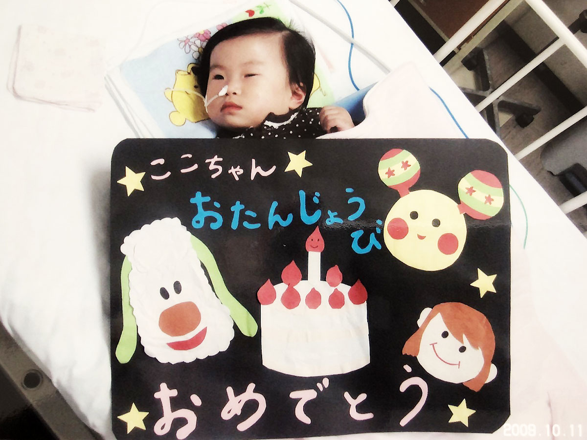
入院しているあいだに、「退院したらこういう生活ですよ」というお話はありましたか？
ののここママ あったと思います。退院するときは全介助でした。だけど、痙攣はそのときなかったんですよ、だからお薬も飲んでなくて。
ただ、脳の病気をした子には多いらしいよって聞いたことあるんですけど、触るとびくって過敏に反応して、全身に力がぎゅーって入る感じのがあって。今と大きな課題が変化したという感じはないですね。
退院することになったとき、こういう状態でやっていくんだってわかったときの思いはどういう感じでしたか？
ののここママ そのときは、「私やれる」って思ってたんですよ。障害を抱えたお母さんとは無縁かなって思ってたんですけど、入院して3ヶ月のあいだにいろいろ考えて、浮き沈みもいっぱいあって、「よし、私頑張る」って。
「ここちゃんが障害になったことを私がわーってなったらかわいそうやん」って思って、やれると思って、やる気満々で思ったんですけど、波は続いてて、たぶんいいときに退院したんですよ。
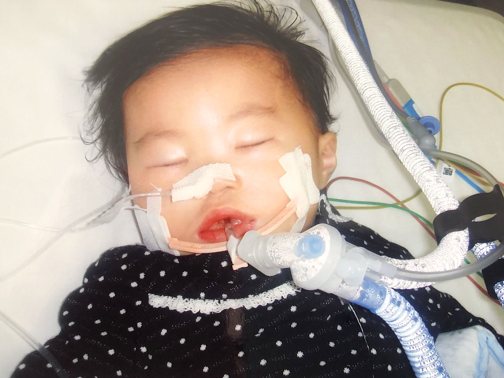
でも、やっぱりもう、退院してから1日の中でも気持ちがぐらつくし、1週間のあいだに何度も涙を流す夜が続いたりしてましたね、急に不安になったりとか。
痙攣が起きて入院をして、今後こういう状態になりますよって話を聞いたのはどのタイミングだったか覚えてますか？
ののここママ 覚えてるんですけど、今後の状態を先生が教えてくれなかったんですよね。私は、入院して1ヶ月半くらいまで元に戻ると思ってたんです。
無知すぎて、まったく知識がないから、こういう状態になった子がだいたいこうなるよって予測もまったくできなくて、先生に「いつ歩けるようになりますか？」って軽く聞いたんですよ。
そしたら、先生の顔色が変わって、「このお母さんはわかってない」って思ったんでしょうね。「お母さん、心希ちゃんは歩いたりはもうできないですよ」って言われて。そこで「え？」みたいな、「どういうことですか？」ってなって。
「心希ちゃんは歩いたりできないし、できるとすれば、口からご飯を食べて首がすわるくらいかな」って言われて、そこでいったん叩き落されるみたいな。
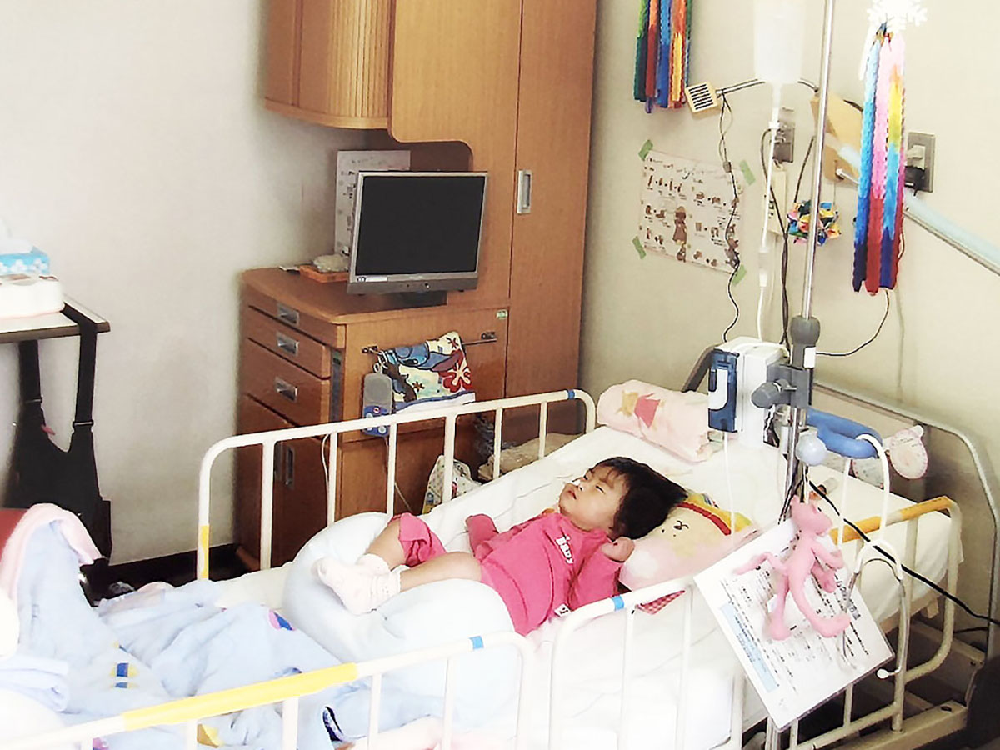
よくなると思ってたのが、ダメなんだっていう。
ののここママ ダメなんだっていうのは、私の答えの中になかったことだったので、衝撃があまりにも。昼間だったんですけど、泣きながら旦那に電話をして、4人部屋だったんですけど、たぶんいっぱい聞こえてますね。
いまだに旦那は、受け入れきれてない部分がありますね
1ヶ月半のあいだは、こういう状態だけれども、よくなるとおふたりとも思っていたんですか？
ののここママ 旦那はどう思ってたのかな……、たぶん旦那もそう思ってたと思います。
パートナーさんはその話を聞いて何か言ってましたか？
ののここママ たぶん私がズタボロだったので、「あ、そう」って冷静な感じだったけど、あとでひとりで泣いたりしてたらしいです。一度も見たことないですけど。いまだに旦那は、受け入れきれてない部分がありますね。「ここちゃんが健常の子やったらね」とか、「元気やったらね」とかよく言うから。
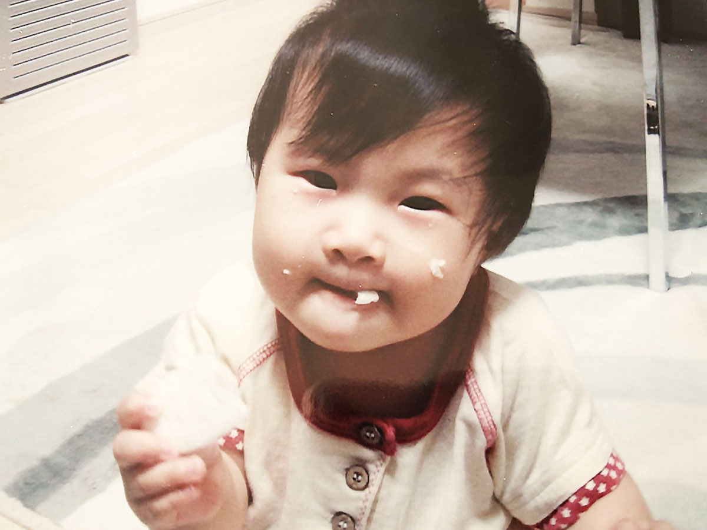
先生もある程度わかるだろうと思ってたところがあったんですかね？
ののここママ 私があんまり聞かなかったからですかね。病院で話をされても、専門用語が多くて難しいから、「お母さん質問ありますか？」って何度も言われたんですけど、「そのとき聞きまーす」みたいな、何を質問していいかわかりません、みたいな。
「わからないことがわからない」という感じでしたか？
ののここママ そうですね。1回、先生に聞く前に、看護師さんに「バギーの準備とか進んでますか？」って言われたことがあったんですよ。「ん？何言ってるんですか？」って。
まず、バギーもピンとこないんですよね。車椅子は聞いたことあるけど、「バギー？ん？手配？なになに？」みたいな。
看護師さんもそこでハッとしたのか、「いやいや、もしそんな話があったんならと思って」って感じで終わって、もやもやっとはしてたけど、先生にそう言われていろいろつながる、みたいな。障害の子が乗ってる車椅子のことかなぁ、とか。
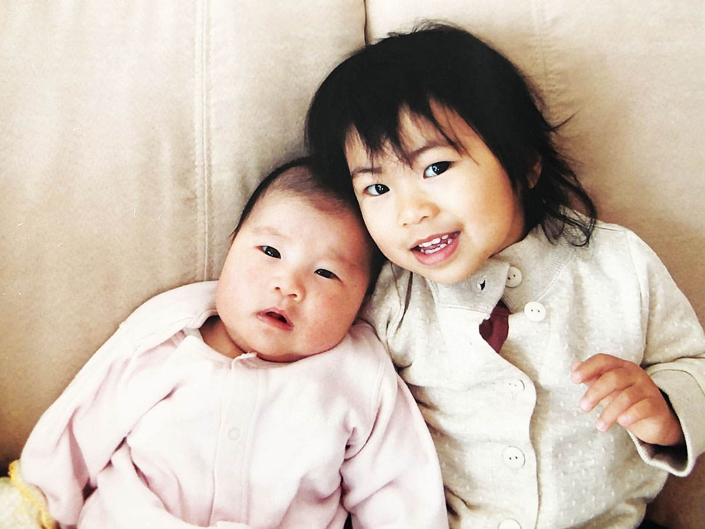
そこから、動揺しつつも準備をされたんですか？
ののここママ 準備も何をどうしていいかがわからないから、私はけっこう何もしなくて、退院するころに看護師さんとソーシャルワーカーさんが来て、「訪問看護を受けたほうがいいんじゃないか？」ってことで。
「え、なんだろう、それ」ってまったく真っ白の状態から、「訪問看護ね……人をうちに、へぇ……緊張する……」みたいな感じでしたね。
吸引器に関しては、そのとき必要なかったので後から買ったし、これといって大事なことは注入くらいで。注入は退院前に教えてもらいました。チューブの入れ替えは自信がないから、訪看さんにしてもらう、みたいな流れで、それくらいでした。
そのときに必要だったのは、その他にベッドくらいですか？
ののここママ そのときはまだ小さかったのでベビーベッドで、ふとんを下に入れてななめにしたりして。車もチャイルドシートも、そのままで。
急性脳症、尿崩症、思春期早発症
どのような診断名がついていますか？
ののここママ 診断としては、急性脳症後遺症ですかね。痙攣が起きて出た脳症ということで。手帳に書いてあるのは、これですね。
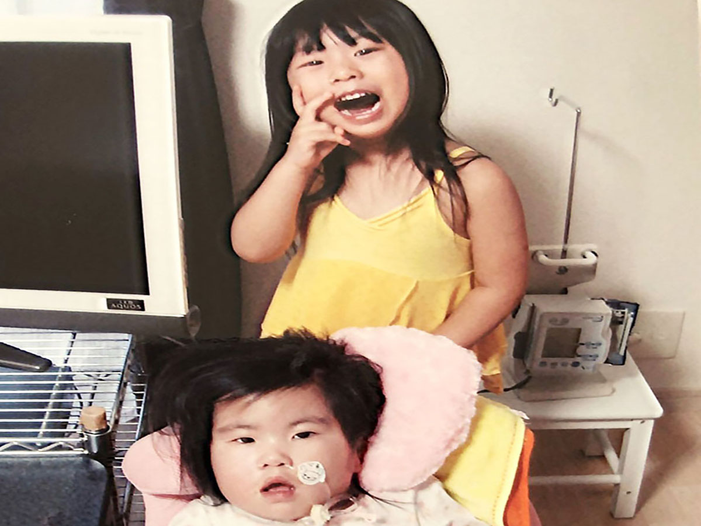
尿崩症ももってます。あと、思春期早発症もあるので、もう生理があるんですよ、お姉ちゃんをこえて。けっこう早くから言われてて、わかってはいたんですけど、それでも私、まだ心が追いつかなくて。
思春期早発症と言われたきっかけはあったんですか？
ののここママ 昔、ボトックス注射を3ヶ月に1回30箇所くらい打ってたんですよ、筋緊張が強いから。そのとき、小児科の先生が、はだかにして打つんですけど、胸とおむつの中をのぞいて、ずーっと見られてて。「何？やめてー」と思ったんですけど、そのときに「お母さん、思春期早発症って言われたことない？」って。
「なんですか？」って言ったら、「早いうちに、低学年のうちに隠毛が生えて、生理が来るよ」って言われて。 そのときは、えー、どこ見て判断？とか思ったんです。胸とか、確かにぽちゃぽちゃと、ずっとしてたけど、太ってる赤ちゃんのおっぱいじゃないのかなと思ってたら、実は性徴のおっぱいだったらしく。
そうだったんですね。
ののここママ でも、そんな胸大きいねって感じじゃなく、下もまだツルツルの状態だったし。そしたら、陰毛はもっと早い段階でゆっくり生えてきだしてたんですよ。今はまあまあしっかり生えてるんですけど、タイミング的に生理待ちの時期というか。いつ来るかなと思ってたら、6月にきて、きたらきたで落ち込むっていう。その先生の見立ては的確だったんだなぁと。
1番多いときは週に11回、人が来る
心希ちゃんは今、何年生なんですか？
ののここママ 今、9歳で3年生です。支援学校に行けなくて、支援学校の訪問学級を受けてます。今日は授業がない日で、本当だったらデイに行ってるんですけど、昨日が病院受診で私だけが行く日だったので昨日デイに預けて授業をお休みして、2日連続外出だと本人きつがるので、今日は家にいることにしました。
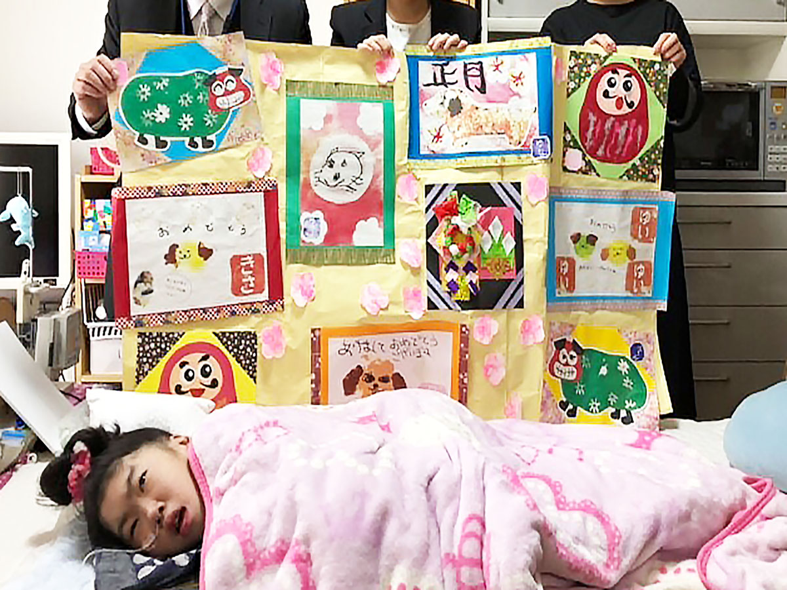
訪問学級ではどんなことをしているんですか？
ののここママ 季節に合わせた制作が多いです。学校で文化祭があったので、文化祭で飾る作品とかを作ったり。あのカーテンの横にあるものも先生と心希で作ってたんですけど、手で絵の具を白ボールにペンペンってつけたり、綿をつけたりとか。
制作が基本にあって、先生の中で、これはいつまでに作るっていうのがあって、週3しか授業がないので、先生のペースで、何日までに作るから、今日は何分間これをして、残りは絵本を読む、みたいな感じで、日々の授業が進んでます。
このあいだは、小麦粉にお湯をたらしてぐちゃぐちゃにして、先生が「大変なことになってすみません〜」って。感触遊びみたいな感じで、スライムを作ったりとかいろいろしますね。
授業がない日はどうしてますか？
ののここママ 火水金が授業の日なんですよ。それ以外の、月木土は、ほとんどデイに行ってます。9時40分お迎えで、16〜16時半に帰ってきますね。長いときは16時40分かな。
デイでもけっこう制作をしたり、いろいろしていただいて。学校でハロウィンやったり、デイでも制作して持って帰ってきたり、母の日・父の日は2倍って感じで（笑）今後はクリスマスに向けて制作するのかな、と。
制作をしたら、訪問始業式などしてくださるんです。大きい紙にひとつのテーマを決めて各クラス、うちは先生ひとりにふたりで2組って呼ばれてるんですけど、2組は同じ課題で色を変えるみたいな感じで、壁に貼りつけたのをバックにして、写真を撮るんです。なので、だいたい季節の感じになってます。
それは記念になりますね。いろんなことをしてるんですね。
ののここママ そうですね、私も最初は何するんだろなって思ってたんですけど。最後1年終わったら、自分のところだけ切り取って、ファイルにしてくださって、毎年いただいてます。
1日のスケジュールを教えてください。
ののここママ 朝は本人はバラバラで。7時くらいから起きて、7時45分に長女が学校に出て行くので、それまで朝食とか長女の行く準備とかですかね。（心希ちゃんのごはんは）7時から7時半のあいだに注入を開始します。
だいたい1時間半かけて注入するので、そこから日によるんですけど、学校の先生が午前中に来る日は10時から授業がはじまるので、10時までのあいだに家のことを片付ける感じですかね。
授業は11時半までです。でも、私のおしゃべりが過ぎるので、長いときは12時半くらいまでいたりとかあるんですけど。
火曜日は授業が午前中で、水曜日が午後なんですよね。13時半から15時という感じで。
金曜日は火曜と同じ午前中なんですけど。午前中11時半に授業が終わったら、今度は訪問入浴が、13時15分から1時間くらいであります。訪問入浴は週に2回です。
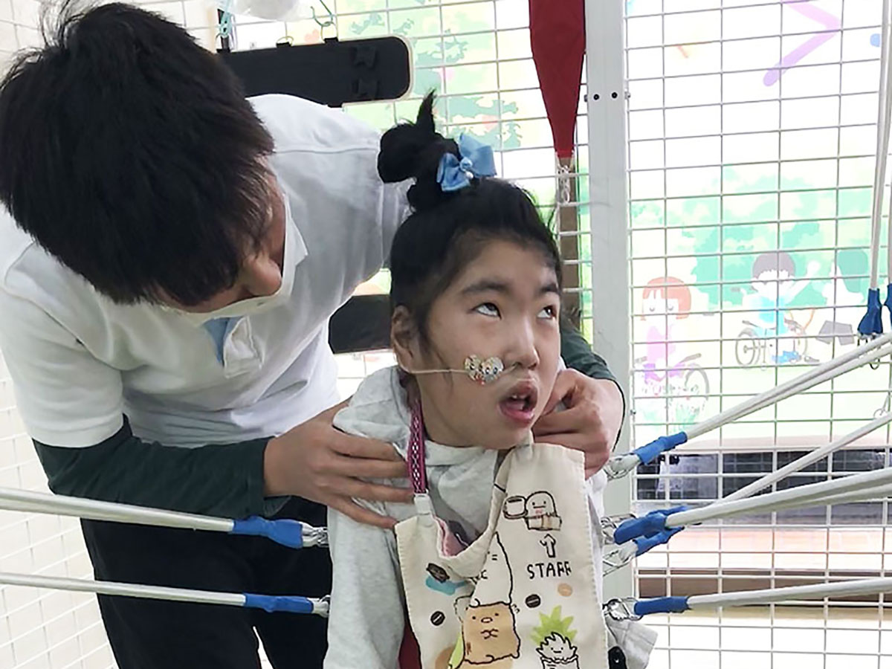
それから、リハビリが15時から16時。PT（理学療法士）とOT（作業療法士）を週にひとつずつ訪問で入れてます。16〜19時まで訪看さんの見守りで、お姉ちゃんの習い事の送り迎えです。1番忙しいとこんな感じです。
とても、お忙しいですね。
ののここママ そうなんです。どうしてもリハを受けたくて、無理やり入れました。1番多いときで3つの事業所を利用してたんですけど、1番多いときは週に11回、人が来るっていう感じで。慣れるまでは3ヶ月偏頭痛が治らず。今は慣れましたけどね。散らかっててもどうぞ〜みたいな感じで（笑）
慣れるまで、気をつかったりしますよね。
ののここママ 看護師さんたちみんな、「掃除しなくていいですよ」って言ってくださるけど、そういうわけには……！みたいな感じでした。もう今は、散らかってるけど普通です。
お昼ごはんのタイミングも大変ですよね？
ののここママ 心希ちゃんはお風呂が終わってからですね。注入しながらリハを受けるとかみたいな感じになりますね。心希ちゃんのごはんは朝・昼・晩の3回です。
19時以降は、みなさんも心希ちゃんもごはんを食べて、お風呂に入って、就寝する感じですか？
ののここママ 私は心希が寝てからなので、寝るのは1時とか。心希は寝るのが遅いんですよ、早くて22時半、遅くて2時とか。薬も使ってるんですけど、バラバラで。基本23時くらいですかね。
心希が寝たら寝たでホッとして、自分のやりたいことをやってから寝ようとすると、1時くらいになったり、そんな感じですかね、いつも。
朝はいつも戦いです。眠くてしかたない
睡眠はしっかりとれてますか？
ののここママ 私自身はどうかなあ、とれてないと思いますね。本当は子どもみたいに寝たい人なんですけど、夜中に2〜3回、娘のことで起きたり、寝てるのに自分のトイレで起きたり。そういう感じなので、朝まで爆睡ということはないですね。なので、朝はいつも戦いです。眠くてしかたない。
パートナーさんが帰って来るのは遅いんですか？
ののここママ 0時から21時のあいだ、早い時は19時半くらいのときもあるんですけど。
そうなると、家のことはだいたい、ののここママさんがやることになっちゃいますね。
ののここママ そうですね。家のことは私に丸投げというか。 たとえば、「おむつ取って」って言っても、もらうまでに15秒くらいかかるんですね。私が取れば早いんですけど、足を支えてないと倒れちゃうとかあるから。 そんなときでも文句じゃなく、「ありがとう」って言うようにしてます。
パートナーさんのお仕事がお休みの日はどんなふうに過ごしてますか？
ののここママ 旦那さんのお休みの日は、毎週日曜日と隔週土曜日です。タバコの自販機の調整とかメンテナンスとかの仕事をしてて。
心希を連れて4人で出かけるのは、年に1回か2回くらいしかなくて、インドア派なんですよ。インドア派のめんどくさがりやで、自分が1番かわいい人なので（笑）
ここちゃんを連れて行くと自分も大変なことが増えるから。座位になるとむせが多くて、吸引を車の中でもしないといけなくなるから、それがかわいそうっていうのもあるし。
昨年のクリスマスの日に障害児がいるご家族に向けてのクリスマスパーティがあって、それに申し込んで、4人で行ったのがすごく久しぶりのお出かけでした。
それもしぶしぶ、ここちゃんが喜ぶならね、みたいな感じで。東区のなんとかロイヤルホテルです。まあまあなお出かけでした。なので、思い出深いです。
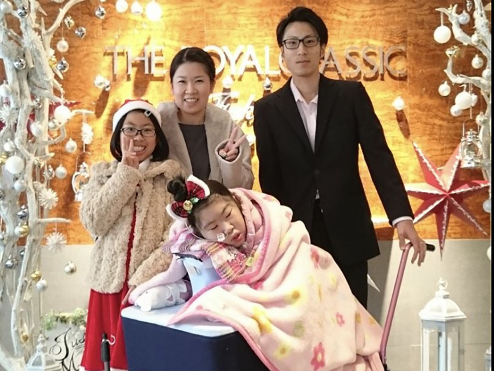
あとは家で、ここちゃんとおしゃべりしたりとか、ここちゃんを横に3人でテレビゲームしたり、人生ゲームしたり。パパがあんまり、休みの日に子どもと遊ぶぞ！っていうパパじゃないので、パパが気が乗ったら遊ぶ、と。あとは交代でお留守番してお姉ちゃんと外に行くってことはしてますね。
うざいくらい愛情は注いでるつもりです
お姉ちゃんはどんなお子さんですか？ふたつ上ですか？
ののここママ 一応、年子になります。パパよりもお姉ちゃんのほうが気が利いて助けてくれて、外出のときの吸引も、車の後ろに乗っててお姉ちゃんがしてくれたりとか。
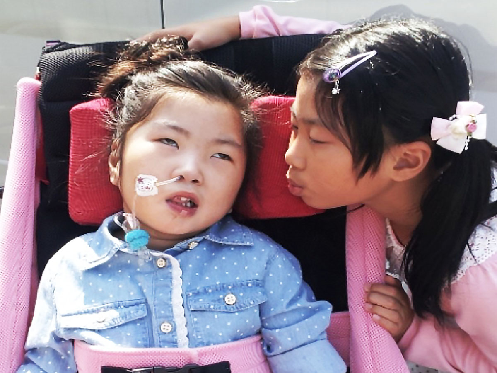
頼りになるお姉ちゃんですね。
ののここママ そうですね。
そんなお姉ちゃんでも、心希ちゃんがいることで、かまってもらえないとか言ったりすることはないんですか？
ののここママ 心希が1歳のときに病気を発症したんですけど、お姉ちゃんがまだ2歳半くらいで。3歳くらいになったころ、在宅でいろいろ慣れてきて、心希が1歳半くらいの在宅になって3ヶ月目のころ、1回だけ我慢がたまってたみたいで、「ここちゃんなんかいらない！」って言ったことがあって。
そこで私もハッとして。必死だったし、いろんなことがはじめてで、一生懸命してたんでしょうね。
小さいなりにもお姉ちゃんだからって「おむつ持ってきてー」とか、ちょっと頼ったりしてたので、我慢させてたのかな、と思って。それから気をつけるというか、やっぱりそれぞれ娘だし。そこからは特にないですね。
でも、やっぱり他の家庭のお子さんよりは我慢が多いのかなと思うことはあるんですけど、その分、異常にハグしたり。パパはクールなんでしないんですけど。
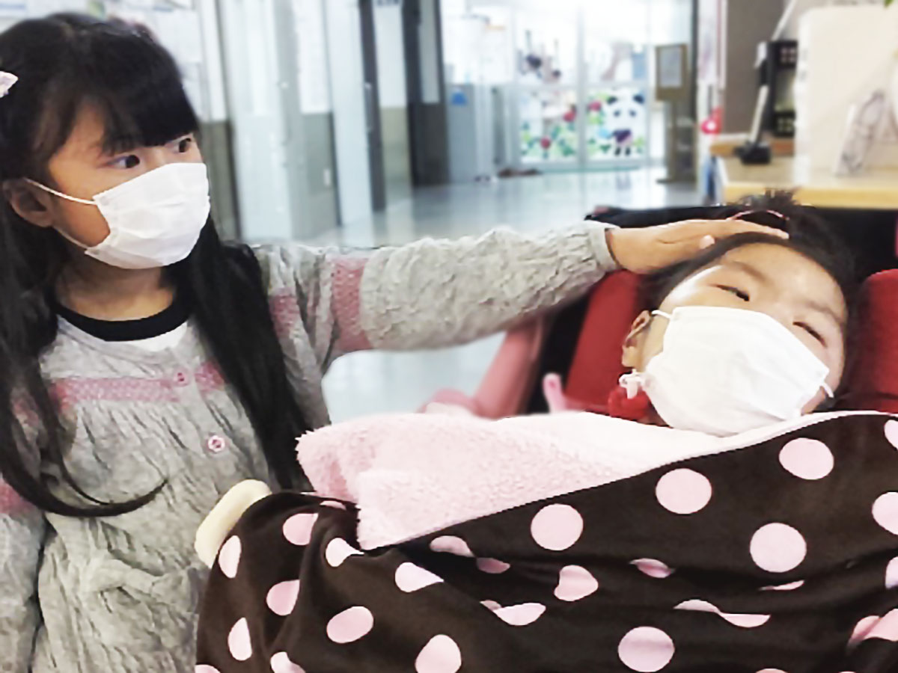
お母さんの愛情が伝わるように意識してるんですね。
ののここママ 上の子が希風っていうんですけど、「1番好きなのはのんちゃんよ」って言ったら、「ここちゃんは？」って言われるので、「あぁ〜、一緒やね」って。「1番がふたりおる」って。異常に溺愛風を。本当に溺愛してますけどね、もちろん。うざいくらい愛情は注いでるつもりです
お姉ちゃんは心希ちゃんのことをどのように思っていますか？
ののここママ 「かわいい」とは言ってくれますね。でもあんまりお友だちに妹の話をしなかったみたいなんです。「説明が面倒くさい」って。そういうところ、パパに似てるのかな。
「もしかして、ここちゃんのことを人に言うのが恥ずかしいと？」って聞いたら、「恥ずかしいとは思わんけど、めんどくさいっちゃんね、いろいろ聞かれるけん」って。「仲いい子にしか言わん」って。
でも、転校する前の学校の作文では、妹のことを書いたみたいで。それが選ばれて、本に載るみたいで。先生に、本に載せていいかお母さんに許可とってきてって言われたとかって。いいよって言ったけど、転校しちゃったし、何の本にいつ載るのかわからないんです。
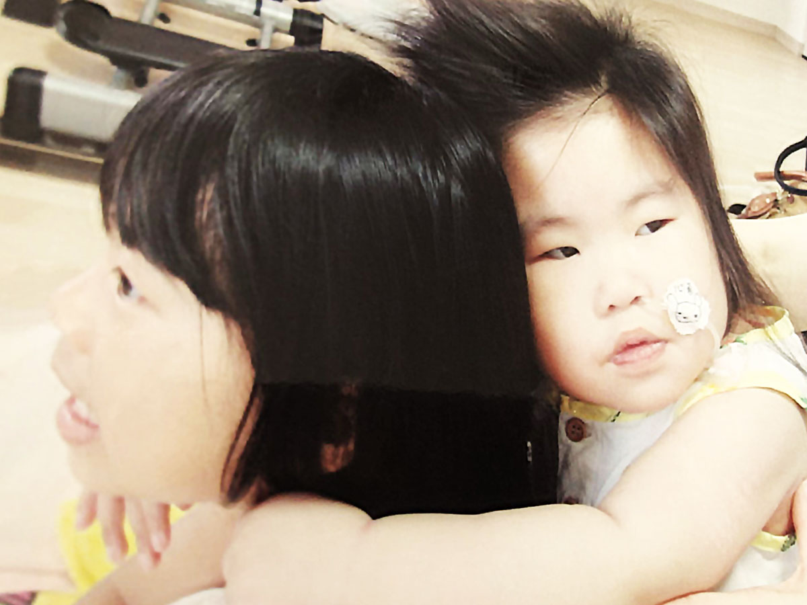
どんな内容を書いたか聞いてますか？
ののここママ ハンディを抱えたどうのこうのとか言って、「うちにも障害のある子がいます。かわいそうって言われるけど、かわいそうじゃありません」のような内容を書いたみたいです。いろいろ感じてたんだなと思って。
最後に、同じ境遇のご家族に伝えたいことはありますか？
ののここママ ひとりで泣く時間は大事だけど、ひとりで抱え込む事はしないほうがいいと思うので、家族はもちろん、家族以外にも支え合える方がいたらいいのかなと思います。
私の場合は、娘の療育施設やリハビリ施設、支援学校などで出会えたママさん達です。とても支えていただいています。逆にありがとうと言ってもらえたり……。その言葉がまた私の活力にもなっていると思います。
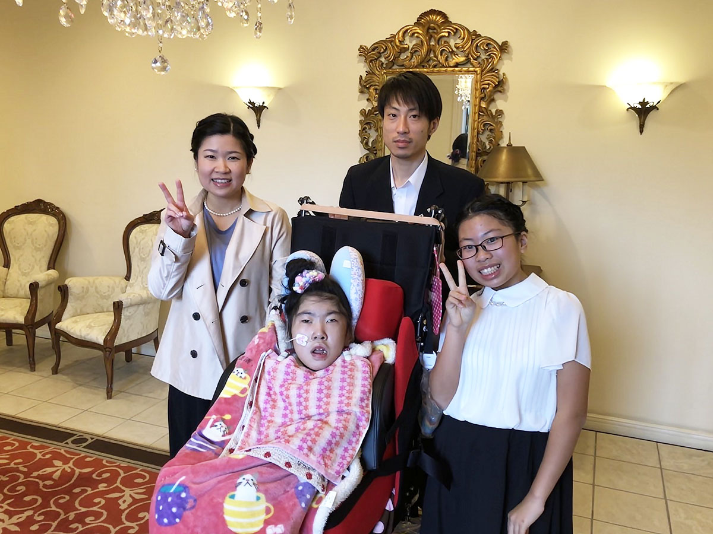
「ありがとう」と言われることって、どんな時ですか？
ののここママ 話を聞いてくれてありがとう」ってことが多いんですけど、内容はごく普通の話です。子どものこととか、母として妻としてのあるある話とか、時には愚痴とか、もういろいろです。
でも、「話を聞いてくれてありがとう」と言われると、お役に立てたのかなと思えるので、私こそ「ありがとう」と言ってもらえて、「ありがとう」と思っています。「ありがとう」って言葉がすごく嬉しくて、とてもありがたいです。
ご協力いただいた、ののここママさま、希風ちゃん、心希ちゃんに心から感謝します。